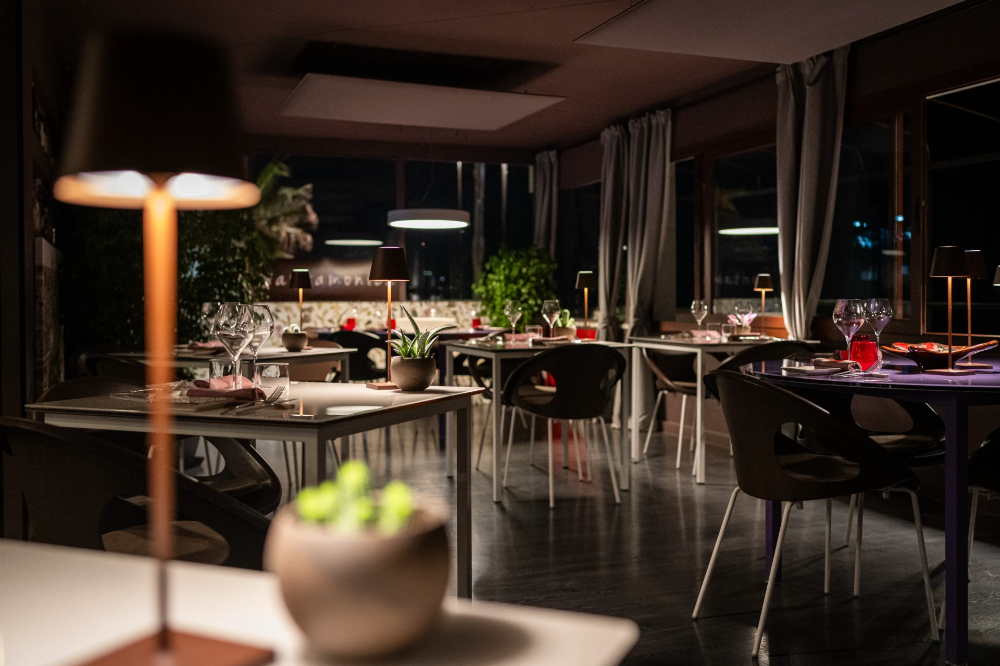

Buono a sapersi · orari veri
⏱ Orari
Dall’11 sett: pranzo ven–dom 12:30–14:30 · cena dalle 19:30.
📍 Dove siamo
Sala sulla spiaggia di San Giuliano, Corso Italia all’altezza dell’Abbazia. D’estate: terrazza sul mare aperto.

🎁 Un dono speciale
Buono di valore libero, oppure uno dei due menù degustazione per due persone.
Scopri i buoni regaloValidità 12 mesi · esclusi sab, dom e festivi salvo accordi